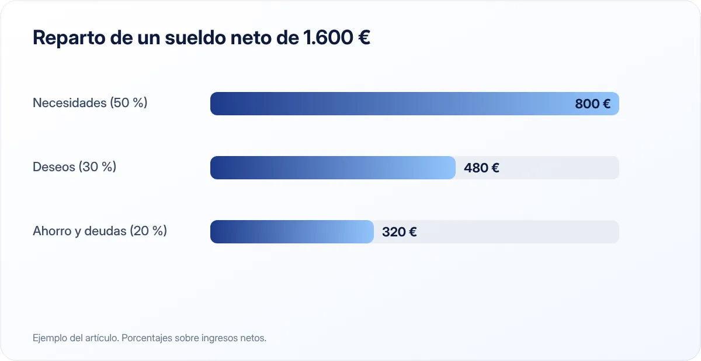

La regla 50/30/20: cómo repartir tu sueldo sin hojas de cálculo imposibles
Un método sencillo para decidir cuánto gastar en lo necesario, cuánto en lo que te gusta y cuánto guardar, sin apuntar cada café.

Puntos clave
- 50 % de tus ingresos netos para necesidades: vivienda, suministros, comida, transporte.
- 30 % para deseos: ocio, restaurantes, viajes, suscripciones.
- 20 % para ahorro y para pagar deudas antes de tiempo.
¿Qué es la regla 50/30/20?
Es una forma de repartir tus ingresos netos —lo que de verdad entra en tu cuenta cada mes— en tres grandes bolsas. Su ventaja es que no te obliga a controlar cada gasto: basta con que ninguna de las tres bolsas se desborde.
El método se popularizó con el libro All Your Worth (2005), de Elizabeth Warren y Amelia Warren Tyagi, y hoy es uno de los puntos de partida más usados por quien empieza a organizar sus finanzas. No es una ley ni una fórmula exacta: es un marco para tomar decisiones rápidas.
Las tres bolsas, una a una
50 %: necesidades
Aquí entra todo lo que tendrías que pagar aunque tu mes fuera malo: alquiler o hipoteca, luz, agua, gas, internet, la compra básica, el transporte para ir a trabajar, los seguros obligatorios y las cuotas mínimas de tus préstamos. La pregunta que lo define es: si dejo de pagar esto, ¿tengo un problema serio?
30 %: deseos
Lo que mejora tu vida pero no es imprescindible: cenas fuera, viajes, ropa que no necesitas, plataformas de streaming, el gimnasio con spa, el móvil de gama alta. Este 30 % no es "dinero malgastado"; es lo que hace que un presupuesto sea sostenible. Un plan que no deja espacio para disfrutar se abandona en dos meses.
20 %: ahorro y deudas
Es la bolsa que construye tu futuro: el fondo de emergencia, el ahorro para objetivos (la entrada de un piso, un coche, la jubilación) y los pagos extra de deudas, es decir, lo que amortizas por encima de la cuota mínima.
Un ejemplo con un sueldo real

Imagina un sueldo neto de 1.600 € al mes. El reparto quedaría así:
| Bolsa | Porcentaje | Importe mensual |
|---|---|---|
| Necesidades | 50 % | 800 € |
| Deseos | 30 % | 480 € |
| Ahorro y deudas | 20 % | 320 € |
Con 320 € al mes, en un año habrías apartado 3.840 €: suficiente para empezar un fondo de emergencia sólido.
Cómo aplicarla paso a paso
1. Calcula tus ingresos netos
Usa la cantidad que cobras después de impuestos y cotizaciones. Si tienes pagas extra prorrateadas, ya están incluidas; si no, puedes repartirlas mentalmente entre los doce meses o destinarlas directamente al ahorro. Con ingresos variables (autónomos, comisiones), toma la media de los últimos seis meses o, mejor aún, el peor mes de ese periodo.
2. Clasifica los gastos del último mes
Descarga los movimientos del banco y marca cada gasto como necesidad o deseo. Te sorprenderá: muchas personas descubren que su "necesidad" de transporte incluye taxis evitables o que la compra semanal lleva un 20 % de caprichos.
3. Compara con el 50/30/20
Si tus necesidades ya superan el 50 %, no te agobies: es lo habitual en ciudades con alquileres altos. Anota la diferencia y pasa al punto siguiente.
4. Automatiza el 20 %
Programa una transferencia a una cuenta de ahorro el mismo día que cobras. Lo que no ves, no lo gastas. Es la parte más importante de todo el método.
5. Revisa cada tres meses
Los precios y tus ingresos cambian. Una revisión trimestral de diez minutos basta para reajustar.
Cuándo conviene adaptarla
En Madrid, Barcelona o Palma, la vivienda sola puede superar el 40 % del sueldo. En esos casos es razonable empezar con un 60/20/20 o incluso un 70/20/10, y mover los porcentajes a medida que suban tus ingresos o bajen tus gastos fijos.
Si tienes deudas caras (tarjetas revolving, préstamos al consumo con intereses altos), puede tener sentido un 50/20/30: recortar deseos temporalmente para dedicar el 30 % a liquidar esas deudas cuanto antes.
Y si ganas bastante más de lo que gastas, no te limites al 20 %: subir el ahorro al 30 % o 40 % acelera enormemente cualquier objetivo.
La regla es una guía, no una ley. Lo importante es que el ahorro sea un porcentaje fijo y automático, aunque al principio sea pequeño.
Errores habituales
- Usar el sueldo bruto. Los porcentajes se aplican siempre sobre lo que cobras en neto.
- Meter el ahorro "si sobra". Si esperas a final de mes, nunca sobra. El ahorro va primero.
- Clasificar deseos como necesidades. La tarifa de fibra más rápida o el coche nuevo pueden ser deseos disfrazados.
- Ser demasiado estricto. Si un mes te pasas en deseos, compénsalo el siguiente y sigue adelante.
En resumen
La regla 50/30/20 es la manera más rápida de pasar de "no sé en qué se me va el dinero" a tener un plan. Calcula tu neto, separa tres bolsas, automatiza el ahorro y ajusta los porcentajes a tu realidad. Si quieres ir un paso más allá, prueba a hacer un presupuesto mensual detallado o a crear tu fondo de emergencia.
Fuentes consultadas
- Warren, E. y Warren Tyagi, A. (2005). *All Your Worth: The Ultimate Lifetime Money Plan*. Free Press.
- Banco de España — Portal del Cliente Bancario
Este artículo es informativo y no constituye asesoramiento financiero, fiscal ni jurídico personalizado. Las cifras son orientativas y pueden cambiar; consulta las fuentes oficiales y, si lo necesitas, a un profesional. Cómo elaboramos nuestras guías.